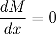
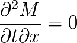
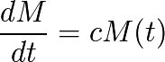
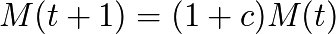
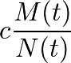
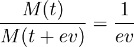
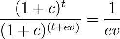
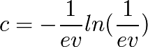
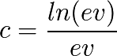

Solutions
A spatio-temporal symmetry (the application of relativity principle) is then necessary, that permits values exchanges circularity, ensuring a temporal continuity, that is non-discriminatory inside of the spatio-temporal reference frame, taking into account present and future and while also limiting the quantity of money so it is both stable and an non-null exchange potential.
Is it only possible? Yes!
As we’ll see, not only the solution classes are perfectly determined but we can find one optimized solution.
a) Solution classes
Monetary creation solutions respecting spatio-temporal symmetries imply that the monetary mass “M(t)” chosen by the actors of a mathematical mutual credit (not a debt), so without dimension and not linked to a specific value.
Symmetry conditions and thus of freedom, will permit us to establish differential equations necessary to determine solutions to the “three producers” problem.
A spatial symmetry
No reference frame or individual present at an instant “t” is privileged toward new money creation. We obtain then with “t” constant:

dM represents money variation, and dx the spatial dimension and so as with definitions given in the previous chapters, the step from one individual to another.
We are making reference to a notation and a physicist reasoning, but we could have noted as well in a more mathematical notation:

Anyone could then better understand the spatio-temporal symmetry invoked here according its own notation and usual thinking referential.
A temporal symmetry
All generation is established in the same economical way during all of it’s limited lifespan “ev”.
No generation is privileged in the time. The whole individuals positioned at the time immediately following “t+dt” has to be credited of a relative part of money at the same way and in the same relative ratio than the individuals positioned at the time “t” and so in a continuous notation:

Or again a discrete approach (dt = 1 time unit ):

“c” represents then the relative ratio or the relative variation of money during a small unit of time “dt” (we will see later what does “small” mean in our reasoning, when we will approach the notion of lifespan).
Relative amount of money created must be then relatively constant in all times, respecting by then the temporal symmetry and permitting participation of individuals of all generations to the same monetary system by respecting the three economic freedoms and the principle of relativity in the whole considered space-time.
Which makes that the problem of the three producers is resolved by only one class of possible solutions. These are the exponential solutions (or “power” functions):

It is also written in power of (1+c) in the form:

Concretely this means that for coherents solutions with the three economical freedoms and the principle of relativity, anyone of the N(t) actors of the economical zone existing at a date “t” is emitting a same relative part of money, a “universal dividend” (UD) that is valuated as:

Saying it with other words: “c” growth of the monetary supply “M” is relatively stable and distributed symmetrically between whole presents and coming actors. These solutions with Universal Dividend ensure the respect of the relativity principle. the density of the money is ensured in all time and space, avoiding that way the extreme monetary droughts (sources of deflation), as well as the extremes of the excess of monetization (sources of local bubbles or hyperinflation).
The money is created in a continuous way consistent with the continuous replacement of the generations and the growth of the chosen monetary supply, “c” is equitably attributed in space (the whole individuals) at a “t” instant whatever “t” is, which is the only way not to harm the economical actors from present as well as future ones, that we can also name “flow of individuals”.
So it is well the space-time factor, and more exactly the temporal dimension (generational), linked to the limited duration of the life of individuals, that changes the nature of the definition of the money. So we need to avoid the fundamental error that is to considerate the whole actors as a “permanent” quantity. Understanding that it is a flow of individuals in perpetual renewing, and that in that flow there is no reason to privilege any of them regarding the monetary creation in the whole economical space-time thus determined.

(Luc Fievet RTM 2.0)
“c” is the Universal Dividend factor, it represents well a part of the total monetary supply existing at the instant “t”, created for every member. That monetary part permits them to exchange their goods an services in a independent way from the previous monetary creation. That same part must be small enough to keep to the pre-existing money a stable value.
It would be wrong to understand here that the monetary supply should be “an exponential function”. We treated here only the theoretical idea of three producers, perfectly replaced between space and time. Therefore we should keep only the fundamental instant result, to know: a universal dividend that we are going now to establish the limits and coherent framing values.

Green elements represent the births, in red the deaths of individuals, the vertical axis is the time (Luc Fievet RTM 2.0)
b) Optimization and life span
It is possible to find a fundamental relation between Universal Dividend “c” and life span. Indeed, let’s consider first to simplify an economic zone composed of N(t) members with N(t) being stable in time and having an average life span “ev”. Let’s observe at first how the living generation is positioning itself toward the flow between the generations already dead and those that just born.
If we imagine now that a unit of time pass, we must also know how individuals closer to “ev” pass from life to death and those not yet born but soon come to existence, as well as the passing of one time coordinate to the next of all those that stay in life.

In green living generations at “t”. We must see and understand on that schema the temporal height of existence “ev” and its center of symmetry “ev/2”
To do an analogy, you can think of a fountain that always seems the same seen from far although its droplets of water disappear step by step in the time, passing from the positions of those that are at initial projection at its base to those falling back in the basin. It takes a given time (the life span) for a drop of water to effectuate the whole of that “life track” by following the stream of water jet, that itself seems immutable.

Fountain (wikimedia)
Once that observation understood and integrated with the previous results, we can then pose as fundamental relation that the creation of the money supply during the whole past life expectancy must only be represented at “t” instant toward the existing monetary supply as the tiny fraction of individuals of that nearly disappeared generation but still present in the temporal height in proportion of 1/ev.
We have to pose that:

Which implies:

Which gives for c:

“c” being small we mathematically demonstrate (limited development) that it can also be written as:

Or more simply:

These three last expressions (E1), (E2) and (E3) being equivalent.
As we have seen before we cannot be satisfied completely with this value because the center of the temporal symmetry is placed at ev/2 and not at ev. It is thus here a minimal value for c, that goes in the way of giving the advantage to the leaving generation (older). The same reasoning for “ev/2” gives us a value in accordance with the central symmetry:

It’s important to note that the time unit is in the calculation is not neutral, because it’s linked to the regular distribution of the universal dividend in the economy. This rhythm is not neutral for the economy. We choose the year as a fundamental economic unit because of experimental data that give to the solar year a fundamental economic rhythm because of the annual harvest and holidays.
{kind=link}
Generation shown here in blue does not represent more than 1/ev of the whole livings, has participated to the monetary creation of previous generation for M(t) during all its existence even if the monetary supply in place is M(t+ev)
Let’s note that money is quantitative when we use it, it’s continuous aspect being only an appearance (see the analogy of the fountain). Thus, the Universal Dividend is quantitative. Having bounds of relatives values is completely coherent with a stable quantitative UD which is recalculated and increased only when it might risk to exceed its acceptable bounds of its relative value. This remark is important and needs to be analyzed deeply. This is what allow a project of free money compatible with the RTM (like OpenUDC and uCoin) to use a fundamental, and yet simple and understandable, rule to conciliate indefinitely between quantitative and relative value.

After 80 time units, the previous generation represented by 1 at t=0 will account for only 1/80th of the existing money
Conclusion
We can now conclude and write the complete fundamental result of the RTM:
The monetary systems compatible with the principle of relativity and the three economic freedoms are monetary system with a Universal Dividend which the value is a proportion to “c” of the money supply which depends on the average human lifetime of the considered economic zone. Equation to calculate the UD should then be similar to:

The converse is then a fundamental result of the RTM too:
“The monetary systems which do not integrate a universal dividend are not compatible with the relativity principle and the three economic freedoms”
We could also add to better clarify that an universal dividend which would exist but would be too weak or too strong, then, outside the defined ranges, on a too long period, then benefiting a generation on another (entrant, outgoing, whatever!) would not be compatible with the RTM too.
This last point is fundamental because the temptation is big for the living to claim excessive property rights on the living area, then violating the freedoms of their successors. History is full of these violations of fundamental principles, which lead inevitably to insurrections in the end.
We could remember that Universal Dividend is almost inversely proportional to the life expectancy of the economic zone considered (ln being a function which varies very little).
{kind=link}
Acceptable values (in blue) of the % of universal dividend depending on the life expectancy At the bottom of the colored area a dividend too weak will have a tendency to favor outgoings, whereas at the top a dividend too big will have a tendency to favor entrants
These results conclude our main theoretical development.